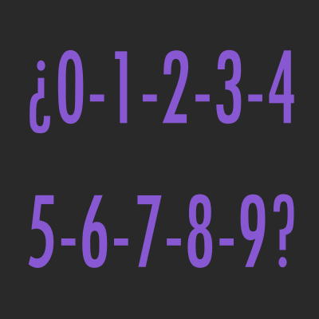

¿Qué es el Sistema Decimal?

El sistema de numeración decimal, es un sistema de numeración posicional en el que las cantidades se representan con 10 símbolos, es decir, es un sistema base 10 {0, 1, 2, 4, 5, 6, 7, 8, 9}.
Excepto en ciertas culturas, es el sistema usado habitualmente en todo el mundo y en todas las áreas que requieren de un sistema de numeración, como la matemática o física.
El sistema decimal se ha extendido a decimales infinitos para representar cualquier número real, mediante el uso de una secuencia infinita de dígitos después del separador decimal.